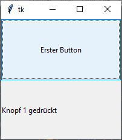

ttk.Button
ttk.Button erzeugen
button = ttk.Button(parent, Optionen)
| Optionsname | Beschreibung |
|---|---|
| default | "normal", "active" oder "disabled". Zusätzlicher Status für Knöpfe in Dialogfenstern, in denen es einen "default"-Knopf gibt. |
| width | Breite des Knopfes in Zeichenbreite. Negative Werte bedeuten Mindestbreite. |
ttk.Button kennt die Standardoptionen:class_, compound, cursor, image, justify, state, style, takefocus, text, textvariable, underline und command
Das folgende Programm stellt einen Knopf bereit und reagiert auf Knopfdruck:
import tkinter as tk
from tkinter import ttk
class A(tk.Tk):
def __init__(self):
super().__init__()
self.geometry("200x200")
self._createWidgets()
def _createWidgets(self):
button1 = ttk.Button(self, text='Erster Button', command=self._onButtonPress)
button1.pack(fill=tk.BOTH, expand=tk.YES)
self._labelText = tk.StringVar(value='warte...')
label = ttk.Label(self, textvariable=self._labelText)
label.pack(fill=tk.BOTH, expand=tk.YES)
def _onButtonPress(self):
self._labelText.set('Knopf 1 gedrückt')
if __name__ == '__main__':
window = A()
window.mainloop()Methoden
- ttk.Button kennt die Methode
b.invoke(): Ruft die zum Button gehörende Callback auf - Konfigurationsmethoden:
cget(…)undconfigure(…) - Sonstige Methoden:
identify(…),instate(…)undstate(…)
Mehrere Knöpfe - eine Callback
Möchte man mit mehrerren Knöpfen auf eine Callback zielen, dann ist es hilfreich,
die Knöpfe unterscheiden zu können. Hierbei hilft
lambda:
import tkinter as tk
from tkinter import ttk
class A(tk.Tk):
def __init__(self):
super().__init__()
self.geometry("200x200")
self._createWidgets()
def _createWidgets(self):
button1 = ttk.Button(self, text='Erster Button',
command=lambda x=1: self._onButtonPress(x))
button1.pack(fill=tk.BOTH, expand=tk.YES)
button2 = ttk.Button(self, text='Zweiter Button',
command=lambda x=2: self._onButtonPress(x))
button2.pack(fill=tk.BOTH, expand=tk.YES)
self._labelText = tk.StringVar(value='warte...')
label = ttk.Label(self, textvariable=self._labelText)
label.pack(fill=tk.BOTH, expand=tk.YES)
def _onButtonPress(self, whichOne):
if whichOne == 1:
self._labelText.set('Knopf 1 gedrückt')
else:
self._labelText.set('Knopf 2 gedrückt')
if __name__ == '__main__':
window = A()
window.mainloop()Toolbutton
Für eine schnelle Style-variante ohne Rahmen kann man auf Toolbutton
zurückgreifen. Hier die zwei Styles im Vergleich:
import tkinter as tk
from tkinter import ttk
class A(tk.Tk):
def __init__(self):
super().__init__()
self.geometry("200x200")
self._createWidgets()
def _createWidgets(self):
button1 = ttk.Button(self, style='Toolbutton', text='Erster Button')
button1.pack()
button2 = ttk.Button(self, text='Zweiter Button')
button2.pack()
if __name__ == '__main__':
window = A()
window.mainloop()